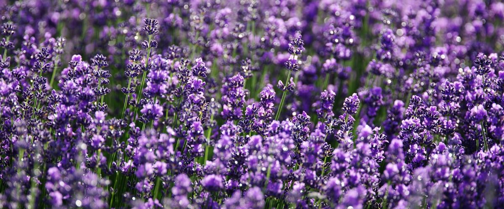
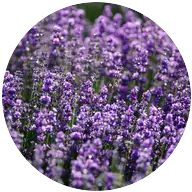

When to plant lavender in Newport and Lincoln City, OR
Plant lavender plants in Newport and Lincoln City Apr 1 – May 27.
- Difficulty
- Easy
- Sun
- Full sun
- Spacing
- 18 to 36 inches apart, depending on variety
- Planting depth
- Plant at the depth it grew in the nursery pot
- Frost
- English types handle about −10°F in well-drained soil
- First harvest
- Light blooms the first summer; full harvests from year two
Why these dates
Newport and Lincoln City's typical last spring frost is March 21. On the coast, the soil is usually ready for lavender around April 1.
Coast. Mild winters but cool, foggy summers. Frost is rarely the problem; warmth is. Pick early, cool-tolerant varieties of tomatoes and squash.
How to grow lavender in Newport and Lincoln City
- Pick a sunny spot with soil that drains well, and mix in an inch or two of compost.
- Plant lavender plants Apr 1 – May 27, 18 to 36 inches apart, depending on variety. Plant at the depth it grew in the nursery pot.
- Water through the first summer only. After flowering, cut plants back by about a third, but never into bare, leafless wood, which won't regrow.
- Harvest: For drying, cut stems when the lowest flowers on each spike have just opened. Hang small bunches upside down in a dark, airy place.
Key numbers
- 6.5–8.0Soil pH
- First summer onlyWater
- After bloom, by a thirdPrune
- Wet winter soilBiggest risk
Growing notes
What makes the difference in Northwest gardens, in plain language.
Drainage and soil
Lavender grows wild on dry, rocky hillsides, and its roots need air as much as water. In the heavy, wet soils common west of the Cascades, roots rot over winter. Plant on a mound, slope or raised bed with gravelly soil, and use gravel instead of bark mulch, which holds moisture against the crown.
Lavender likes neutral to slightly alkaline soil and very little fertilizer. Rich soil grows soft, floppy plants that are less fragrant and more likely to die in winter. Water through the first summer, then only in long droughts.
English lavender vs lavandin
English lavenders like Hidcote and Munstead are compact, very cold hardy and the best choice for cooking, with a sweet scent. Lavandins like Grosso are hybrids that grow larger, bloom a bit later and have a stronger, more camphor-like scent. They're the classic choice for drying, sachets and oil, but they're slightly less cold hardy.
Spanish lavender, with its rabbit-ear petals, is the least hardy and often dies in cold eastern winters.
Pruning and lifespan
Lavender turns woody as it ages, and it won't sprout from old, bare wood. The fix is regular pruning: right after flowering, cut each plant back by about a third, leaving green, leafy growth below the cut. Plants pruned this way every year stay rounded and full for many years.
East of the Cascades, dry summers and well-drained soils suit lavender well, but cold winter winds can dry out plants; a sheltered spot helps.
Common questions
When is the last frost in Newport and Lincoln City, OR?
Typically March 21. In 9 years out of 10, frost is over by April 12. These are 1991–2020 NOAA climate normals for Newport Municipal Airport.
Is it too late to plant lavender in Newport and Lincoln City?
The spring planting window runs through May 27. Potted plants can still go in later if you water them faithfully through their first summer. Fall planting also works well here.
How long until I can pick lavender?
Light blooms the first summer; full harvests from year two. For drying, cut stems when the lowest flowers on each spike have just opened. Hang small bunches upside down in a dark, airy place.
Why is my lavender dying?
Most often it's wet roots, from heavy soil, poor drainage, overwatering or bark mulch against the crown. Old, woody plants that were never pruned also decline. Replant in a mound of gravelly soil and prune yearly after bloom.
Can I cook with any lavender?
English lavenders like Hidcote and Munstead have the sweetest flavor and are the usual culinary choice. Lavandins like Grosso taste stronger and more bitter. Use a light hand, since a little goes a long way.
When should I prune lavender?
Right after the main bloom in summer, cutting back by about a third into leafy growth. A light tidy in spring is fine, but never cut into bare wood with no leaves, which won't regrow.
Also plant in Newport and Lincoln City around the same time
Planting dates for lavender in nearby areas
- Astoria, OR Apr 1 – May 27
- Coos Bay and North Bend, OR Apr 1 – May 27
- Tillamook, OR Apr 1 – May 27
- Brookings and Gold Beach, OR Apr 1 – May 27
- Aberdeen and Hoquiam, WA Apr 1 – May 27
- Forks, WA Apr 1 – May 27
Full planting calendar for Newport and Lincoln City · Lavender in every city